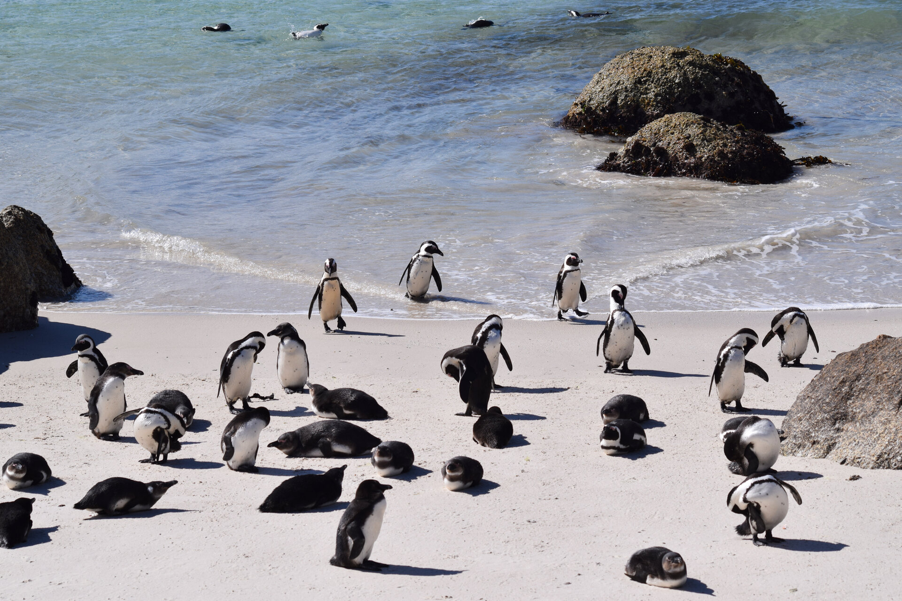
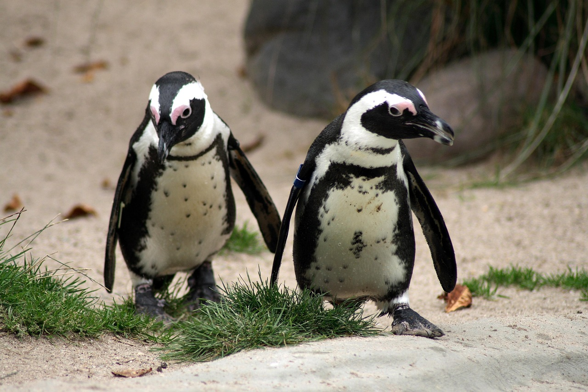

Palmer Penguins Part 1: Exploratory Data Analysis and Simple Regression
r
regression
data-visualization
penguins-arc
An exploration of how a simple flipper measurement can reveal substantial information about penguin body mass through the Palmer Penguins dataset and simple linear regression.
Author
Ronald G. Thomas
Published
January 1, 2025

Penguins on an Antarctic shoreline, the starting point for a data-driven exploration of morphometric relationships.
How much can a single morphometric measurement reveal about an organism’s body condition? The Palmer Penguins dataset provides an opportunity to test the claim that flipper length is a strong predictor of body mass in penguins. The exercise turns out to be one of the most instructive introductions to regression available.
The Palmer Penguins dataset, collected by Dr. Kristen Gorman at Palmer Station, Antarctica, contains morphometric measurements for three penguin species: Adelie (Pygoscelis adeliae), Chinstrap (Pygoscelis antarcticus), and Gentoo (Pygoscelis papua). Body mass is a key indicator of penguin health and reproductive success, and predicting it from easily-measured features has practical value for field researchers who may not always have access to a scale.
In this first post we walk through the complete exploratory data analysis pipeline, examine correlations among morphometric variables, and fit a simple linear regression model. The residual patterns that emerge set the stage for the multi-predictor models explored in Parts 2 through 5.
Motivations
The following considerations motivated this exploration:
A hands-on project to practice exploratory data analysis on a well-documented ecological dataset rather than a toy example.
Curiosity about whether a single measurement (flipper length) could meaningfully predict body mass, or whether the relationship is more complex.
Simpson’s Paradox appears in textbooks but seeing it arise organically in real data reinforces understanding; the Palmer Penguins dataset provides a clear illustration.
A foundation for a multi-part series building from simple regression through random forests, with a clean EDA as the necessary first step.
Practice in transparent model diagnostics: acknowledging limitations rather than presenting only favorable results.
Objectives
By the end of this post, we will have:
Conduct a structured exploratory data analysis on real ecological data, including summary statistics, distributions, and species-level comparisons.
Compute and interpret a correlation matrix to identify the strongest univariate predictor of penguin body mass.
Fit a simple linear regression model, extract coefficients and confidence intervals, and interpret R-squared in practical terms.
Evaluate model diagnostics—residual plots, outlier detection, and assumption checks—to identify where the model succeeds and where it falls short.
Errors and better approaches are welcome; see the Feedback section at the end.
Penguins in a library setting, symbolizing the research journey from data to understanding.
Prerequisites and Setup
To follow along with this analysis, one will need the following R packages:
Background note. This post assumes familiarity with basic R syntax and the tidyverse. No prior knowledge of regression modeling is required; the conceptual foundations are introduced below.
What is Exploratory Data Analysis?
Exploratory data analysis (EDA) is the practice of examining a dataset through summary statistics and visualizations before fitting any formal model. The purpose is to understand the structure of the data, detect anomalies, identify patterns, and generate hypotheses.
A useful analogy: EDA is to statistical modeling what a site survey is to architectural design. Before drawing blueprints, one needs to know the terrain. In our case, the “terrain” consists of morphometric measurements from 333 penguins across three species, and the patterns we uncover will guide every modeling decision in subsequent parts of this series.
Getting Started: Meeting the Penguins
Let us begin by examining the basic characteristics of the dataset.
The dataset includes 333 complete observations from three penguin species across three Antarctic islands, spanning 2007 to 2009. Each observation records bill length, bill depth, flipper length, body mass, species, island, sex, and year.
Species Composition
The three species are not equally represented. Understanding the balance matters because unequal sample sizes can affect statistical power in species-level comparisons.
kable( species_summary,caption =paste("Species Distribution and","Key Morphometrics" ),col.names =c("Species", "N", "Body Mass (g)","Flipper Length (mm)", "% of Dataset" ))
Species Distribution and Key Morphometrics
Species
N
Body Mass (g)
Flipper Length (mm)
% of Dataset
Adelie
146
3706
190.1
43.8
Chinstrap
68
3733
195.8
20.4
Gentoo
119
5092
217.2
35.7
Adelie penguins constitute the largest group (43.8%), followed by Gentoo (35.7%) and Chinstrap (20.4%). Gentoo penguins are notably heavier, with a mean body mass exceeding 5,000 g—roughly 1,400 g more than the other two species.
Figure 1: Species distribution and morphometric relationship overview. Left panel: sample sizes by species. Right panel: flipper length versus body mass with species-specific regression lines.
The right panel of the figure above reveals the central pattern: flipper length and body mass are strongly positively associated, but the relationship varies across species. Gentoo penguins cluster in the upper right, while Adelie and Chinstrap overlap substantially in the lower portion of the plot.

A group of penguins, each a unique data point waiting to be explored.
Species-Specific Morphometrics
A closer look at the per-species distributions reveals important nuances that a pooled analysis would obscure.
The 95% confidence intervals for body mass confirm that Gentoo penguins (mean approximately 5,092 g) are statistically distinct from Adelie (3,706 g) and Chinstrap (3,733 g). By contrast, Adelie and Chinstrap body mass distributions overlap considerably.
Flipper length dominates the correlation table with r = 0.873, well above bill length (r = 0.589) and bill depth (r = -0.472). The negative correlation between bill depth and body mass is a Simpson’s Paradox artifact: within each species, the relationship reverses direction. We will return to this point in Part 2.
Figure 3: Correlation matrix of morphometric variables. Flipper length shows the strongest association with body mass (r = 0.87).
Building a Model: Simple Linear Regression
Given the strong bivariate correlation, flipper length is the natural choice for our first predictive model.
Fitting the Model
We fit an ordinary least squares regression of body mass on flipper length. The pre-computed coefficients and performance metrics are loaded from the analysis pipeline.
The slope of 50.2 g/mm means that for each additional millimeter of flipper length, we expect body mass to increase by roughly 50 g on average. The 95% confidence interval for the slope is [47.1, 53.2] g/mm.
An R-squared of 0.762 indicates that flipper length alone accounts for approximately 76% of the variation in body mass—a strong result for a single predictor, but one that leaves meaningful residual variance unexplained.
Making Predictions
To illustrate the model in practical terms, here are predicted body masses for three representative flipper lengths:
predictions_display <- tibble::tribble(~"Flipper Length (mm)",~"Predicted Body Mass (g)",~"95% CI Lower",~"95% CI Upper",180, 3637, 3589, 3685,200, 4749, 4712, 4786,220, 5860, 5815, 5905)kable( predictions_display,caption =paste("Predicted Body Mass for","Example Flipper Lengths" ))
Predicted Body Mass for Example Flipper Lengths
Flipper Length (mm)
Predicted Body Mass (g)
95% CI Lower
95% CI Upper
180
3637
3589
3685
200
4749
4712
4786
220
5860
5815
5905
A penguin with 200 mm flippers is predicted to weigh approximately 4,749 g, with a 95% confidence interval spanning only 74 g. The narrow intervals reflect the strong linear relationship, though they should be interpreted cautiously near the extremes of the observed flipper length range (172–231 mm).
Figure 4: Simple linear regression of body mass on flipper length with 95% confidence band. Points are coloured by species.
Checking Our Work: Model Diagnostics
A regression model is only as reliable as its assumptions. Before interpreting the results further, we must examine the residuals.
outliers <- model_predictions |>filter(abs(standardized_residuals) >2.5)assumptions_check <- tibble::tribble(~"Assumption", ~"Result", ~"Status","Linearity","Relationship appears approximately linear","Met","Independence","Observations are independent","Met","Normality","Residuals approximately normal","Reasonable","Homoscedasticity","Variance constant across range","Violated by species","Outliers",sprintf("%d observations >2.5 SD", nrow(outliers) ),"Present","Residual Std. Error",sprintf("%.1f grams", model_metrics$rmse),"Acceptable")kable( assumptions_check,caption ="Model Diagnostic Summary")
Model Diagnostic Summary
Assumption
Result
Status
Linearity
Relationship appears approximately linear
Met
Independence
Observations are independent
Met
Normality
Residuals approximately normal
Reasonable
Homoscedasticity
Variance constant across range
Violated by species
Outliers
5 observations >2.5 SD
Present
Residual Std. Error
393.3 grams
Acceptable
The most informative diagnostic is the residual plot below, which reveals distinct species-level clustering. Gentoo residuals tend to be positive (the model under-predicts their mass), while Adelie and Chinstrap residuals are more evenly distributed. This pattern is a clear signal that species membership carries information the model does not yet capture.
Figure 5: Standardised residuals versus predicted values, coloured by species. Species-level clustering indicates that the simple model omits an important predictor.
Things to Watch Out For
Simpson’s Paradox. The negative correlation between bill depth and body mass reverses within species. Always examine relationships both pooled and stratified before drawing conclusions.
Residual clustering. When residuals form visible groups, the model is missing a categorical predictor. In our case, species is the obvious candidate.
Prediction extrapolation. The model is fitted on flipper lengths between 172 and 231 mm. Predictions outside this range are unreliable and should be flagged as extrapolations.
Confidence vs. prediction intervals. The narrow confidence intervals in our predictions table describe uncertainty about the mean response, not about individual penguin masses. Prediction intervals would be substantially wider.
Ecological confounding. Body mass varies with sex, season, and breeding status—none of which are included in this model. Field researchers should account for these factors before using predictions for health assessments.
Penguins reflected in still water, a reminder to look beneath the surface of initial results.
Lessons Learned
Conceptual Understanding
Flipper length alone explains 76.2% of body mass variance (R-squared = 0.762), confirming it as the strongest single predictor among the available morphometric variables.
The species-level clustering in residuals demonstrates why biological context must inform statistical modeling; ignoring species produces a model that systematically under-predicts Gentoo mass and over-predicts for smaller species.
Simpson’s Paradox appears in the bill depth correlation: negative when pooled, positive within species. This is a textbook example that arises naturally in the data.
Confidence intervals around the slope ([47.1, 53.2] g/mm) are narrow, reflecting a well-estimated relationship despite the model’s structural limitations.
Technical Skills
Loading pre-computed results from CSV files separates analysis from narrative, making the blog post faster to render and easier to maintain.
Using knitr::kable() for all summary tables produces clean, consistent output across HTML and PDF formats.
Extracting model coefficients and metrics from broom::tidy() and broom::glance() outputs (in the pipeline scripts) produces tidy data frames that integrate naturally into the reporting workflow.
Setting a consistent color palette at the outset (penguin_colors) ensures visual coherence across all figures in the series.
Gotchas and Pitfalls
Forgetting to remove incomplete cases before modeling can silently change sample sizes and produce misleading results. Always verify the observation count after data cleaning.
Reporting R-squared without examining residual plots gives a false sense of model adequacy. A high R-squared does not guarantee that assumptions are met.
Interpreting confidence intervals as prediction intervals overstates the model’s precision for individual observations.
Using %>% instead of |> in new code introduces an unnecessary dependency on magrittr. The native pipe is sufficient for all operations in this analysis.
Limitations
Temporal scope. The data span only three years (2007–2009). Climate-driven changes in penguin morphology may have altered these relationships in the intervening years.
Geographic scope. All observations come from the Palmer Station region. The model may not generalize to penguin populations in other Antarctic or sub-Antarctic locations.
Single predictor. A univariate model cannot capture the multivariate biological reality of body mass determination. Sex, diet, and breeding status are all known to influence mass.
Missing variables. The dataset does not include age, reproductive status, or feeding history—all of which are relevant covariates.
Measurement error. Morphometric measurements have inherent imprecision (typically 1–2 mm for flipper length), which introduces attenuation bias into the slope estimate.
Species pooling. Fitting a single regression line across three species conflates within-species and between-species variation, inflating the apparent predictive power of flipper length.
Opportunities for Improvement
Add species as a predictor. The residual clustering strongly suggests that a model including species (as explored in Part 2) will substantially improve fit.
Include additional morphometric variables. Bill length and bill depth may contribute explanatory power beyond what flipper length provides alone.
Fit interaction terms. The species-specific slopes visible in the EDA overview suggest that the flipper-mass relationship differs across species.
Use cross-validation. Splitting the data into training and test sets (as in Part 3) will provide a more honest estimate of predictive performance.
Apply formal diagnostic tests. The Breusch-Pagan test for heteroscedasticity and the Shapiro-Wilk test for normality would complement the visual diagnostics presented here.
Compare with non-linear models. Random forest and other flexible methods (Part 5) can capture non-linear relationships that OLS cannot.
Wrapping Up
This first post established the foundation for the Palmer Penguins analysis series. Starting with a thorough exploratory analysis, we identified flipper length as the dominant predictor of body mass and fitted a simple linear regression model that explains roughly three-quarters of the observed variation.
The most instructive finding was not the model’s strength but its limitations. The species-level clustering in the residuals provided a clear, visual demonstration of why domain knowledge matters in statistical modeling. A high R-squared can coexist with systematic bias when an important categorical predictor is omitted.
For those undertaking a similar analysis, we recommend the following sequence: explore the data thoroughly before fitting any model, and always examine residual plots even when summary metrics look favorable. Resist the temptation to interpret a single model in isolation.
In conclusion, four points merit emphasis. First, flipper length is the strongest univariate predictor of body mass (r = 0.873, R-squared = 0.762), confirming that a single morphometric measurement carries substantial information about body condition. Second, the simple model has an RMSE of approximately 393 g, acceptable for broad field estimates but insufficient for precise individual predictions. Third, species-level residual clustering indicates that including species as a predictor will substantially improve the model, as confirmed in Part 2, where R-squared exceeds 0.860. Fourth, Simpson’s Paradox in the bill depth correlation underscores the importance of stratified analysis in ecological data and serves as a useful reminder that pooled associations can mislead.
TipPreview: Part 2
In Part 2, adding species information will improve the model’s R-squared from 0.762 to over 0.860—demonstrating why biological context matters in ecological modeling.
Gorman, K. B., Williams, T. D., & Fraser, W. R. (2014). Ecological sexual dimorphism and environmental variability within a community of Antarctic penguins (genus Pygoscelis). PLOS ONE, 9(3), e90081.
Gorman, K. B., Williams, T. D., & Fraser, W. R. (2014). Ecological sexual dimorphism and environmental variability within a community of Antarctic penguins (genus Pygoscelis). PLOS ONE, 9(3), e90081. Data accessible via the palmerpenguins R package: https://github.com/allisonhorst/palmerpenguins
Feedback
Feedback is welcome for:
Errors or corrections to suggest
Better approaches to any of these analyses
Discussion of statistical methodology or ecological modeling
Questions about the Palmer Penguins dataset or the ZZCOLLAB reproducibility framework
General discussion of regression analysis for ecological data
Related posts in this cluster
This post is part of the Palmer Penguins Analysis Arc series. Recommended reading order: